Publication-Ready Single-Cell Visualisation
Source:vignettes/articles/visualisation.Rmd
visualisation.RmdMotivation
Seurat’s plotting functions are designed for exploration. Getting
them to publication quality typically requires layering
ggplot2 theme adjustments, adding cell borders,
repositioning legends, and reformatting axis labels — the same
boilerplate repeated across every figure in a manuscript.
BadranSeq wraps this into a small set of functions with opinionated defaults: cell borders on, cluster labels on, clean white theme, legend at bottom. The goal is a plot that looks good in a paper without additional customisation.
From Seurat defaults to publication-ready
The quickest way to see the difference — the same data plotted with
Seurat::DimPlot() and
BadranSeq::do_UmapPlot():
p1 <- Seurat::DimPlot(pbmc3k, reduction = "umap") +
ggtitle("Seurat::DimPlot()")
p2 <- do_UmapPlot(pbmc3k) +
ggtitle("BadranSeq::do_UmapPlot()")
p1 + p2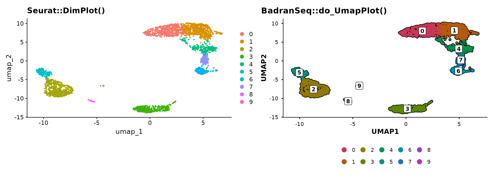
BadranSeq adds cell borders, boxed cluster labels, and a clean theme
automatically. No theme() calls needed.
UMAP plots
do_UmapPlot() is the workhorse for UMAP
visualisation.
Group by multiple metadata columns
Pass a vector of column names to create side-by-side panels:
do_UmapPlot(pbmc3k, group.by = c("seurat_clusters", "seurat_annotations"))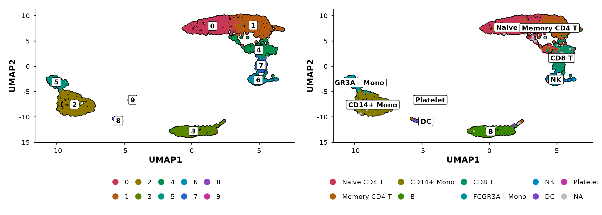
Control panel layout
When combining multiple panels, use ncol and
nrow to control the patchwork layout. For example, stack
the panels vertically with ncol = 1:
do_UmapPlot(pbmc3k,
group.by = c("seurat_clusters", "seurat_annotations"),
ncol = 1)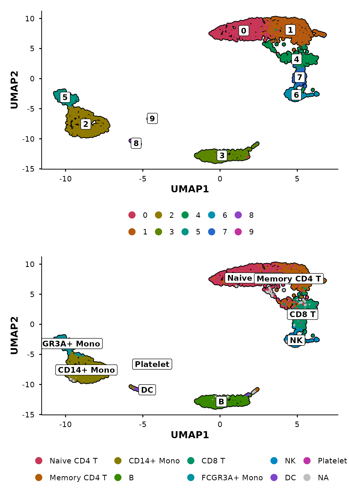
PCA with automatic variance labels
do_PcaPlot() does what Seurat’s PCA plot does not — it
calculates variance explained per PC and formats the axis labels as “PC1
(X.X%)”.
p1 <- Seurat::DimPlot(pbmc3k, reduction = "pca") +
ggtitle("Seurat::DimPlot(reduction = 'pca')")
p2 <- do_PcaPlot(pbmc3k) +
ggtitle("BadranSeq::do_PcaPlot()")
p1 + p2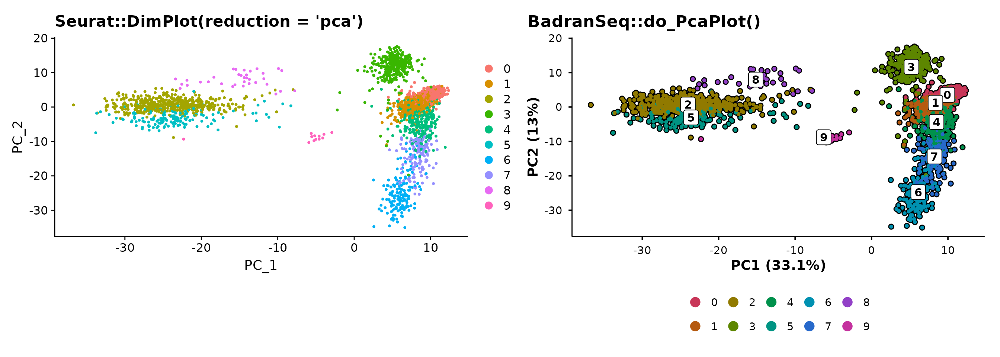
The variance annotation is automatic — no manual calculation or label formatting required.
The unified entry point
do_DimPlot() routes to the appropriate handler based on
the reduction argument:
reduction |
Routes to | Axis labels |
|---|---|---|
"umap" |
do_UmapPlot() |
UMAP1, UMAP2 |
"pca" |
do_PcaPlot() |
PC1 (X.X%), PC2 (X.X%) |
| other | .do_DimPlot_internal() |
REDUCTION1, REDUCTION2 |
p1 <- do_DimPlot(pbmc3k, reduction = "umap") + ggtitle("reduction = 'umap'")
p2 <- do_DimPlot(pbmc3k, reduction = "pca") + ggtitle("reduction = 'pca'")
p1 + p2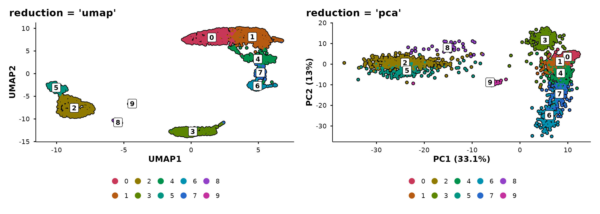
Use do_DimPlot() when writing general-purpose code that
should work with any reduction. Use the specific functions
(do_UmapPlot(), do_PcaPlot()) when you know
the reduction type.
Feature expression plots
do_FeaturePlot() overlays gene expression on the
embedding using a viridis colour scale.
do_FeaturePlot(pbmc3k, features = c("CD3D", "CD14", "MS4A1"))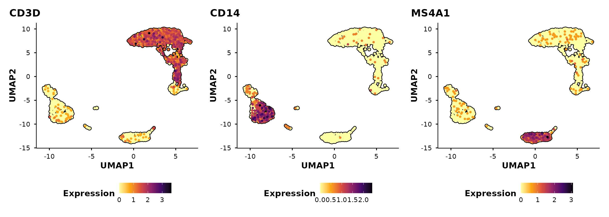
Cells are ordered by expression by default
(order = TRUE), so high-expressing cells are plotted on top
— avoiding the common problem of rare populations being hidden beneath
low-expressing cells.
Control panel layout
Use ncol and nrow to arrange multi-feature
panels. For example, stack them vertically:
do_FeaturePlot(pbmc3k,
features = c("CD3D", "CD14", "MS4A1"),
ncol = 1)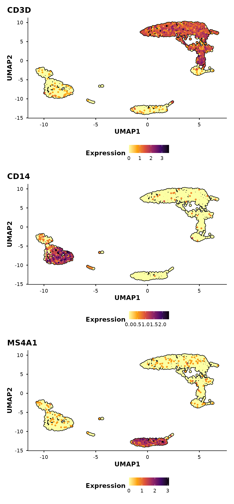
Split-panel silhouettes
This is BadranSeq’s signature visualisation feature. When you pass
split.by, each panel shows:
- A grey silhouette of all cells (spatial context)
- Black borders on all cells
- Coloured cells only for the current split category
This preserves the spatial layout across panels, making it easy to see where a subpopulation sits relative to the full dataset.
First, add a synthetic condition to demonstrate:
Now compare Seurat’s default split with BadranSeq’s silhouette approach:
p1 <- Seurat::DimPlot(pbmc3k, reduction = "umap", split.by = "condition") +
ggtitle("Seurat::DimPlot(split.by)")
p1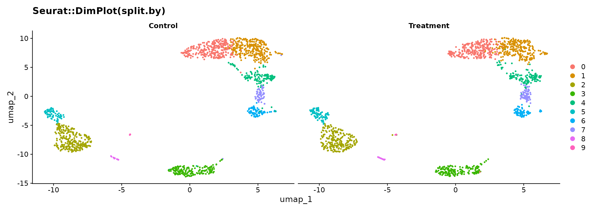
do_UmapPlot(pbmc3k, split.by = "condition")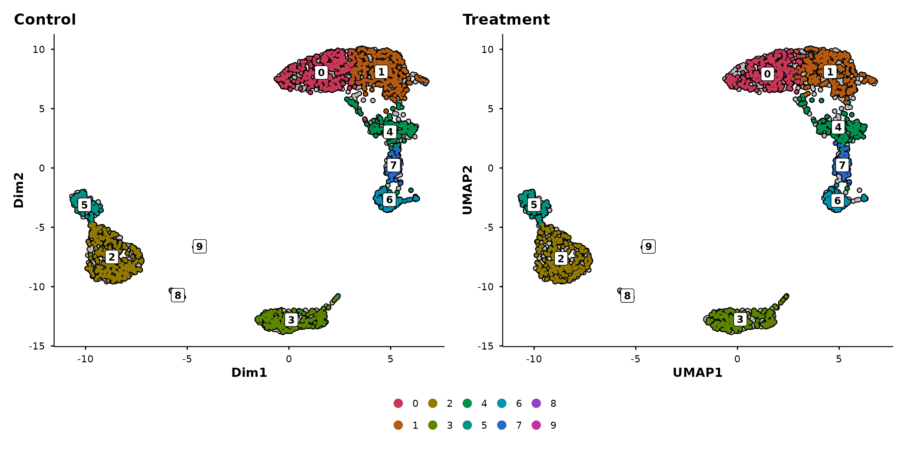
In the Seurat version, each panel only shows its own cells — you lose the sense of where those cells sit in the overall structure. In BadranSeq’s version, the grey background preserves this context: you can immediately see which clusters are enriched in each condition.
The silhouette approach works with any grouping:
do_UmapPlot(pbmc3k, group.by = "seurat_annotations", split.by = "condition")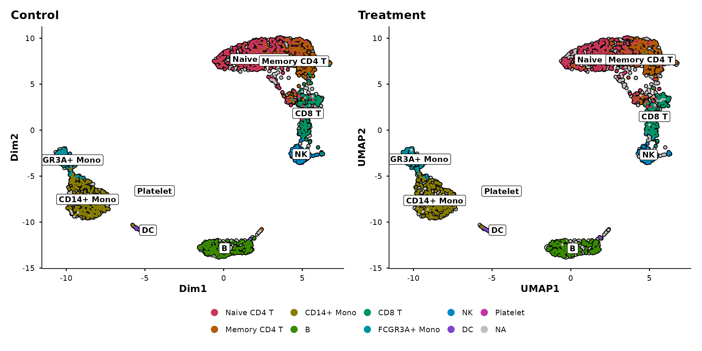
Violin plots
BadranSeq provides two violin plot functions built on
fetch_feature_data():
-
do_StatsViolinPlot()— wrapsggstatsplot::ggbetweenstats()for between-group comparisons with built-in statistical testing. -
do_ViolinPlot()— a pure ggplot2 violin with boxplot overlay, jittered points, and centrality markers (no statistical testing).
The primary function is do_StatsViolinPlot(). If you
want the same aesthetic without statistics, use
do_ViolinPlot() or set
pairwise.display = "none" in
do_StatsViolinPlot().
Statistical violin plots
do_StatsViolinPlot() runs a nonparametric omnibus test
(Kruskal–Wallis) and pairwise comparisons (Dunn’s test) by default,
annotating the plot with p-values:
do_StatsViolinPlot(pbmc3k, features = "CD3D",
group.by = "seurat_annotations",
pairwise.display = "none")## Warning: ✖ Number of labels is greater than default palette color count.
## ℹ Select another color `palette` (and/or `package`).## Scale for colour is already present.
## Adding another scale for colour, which will replace the existing scale.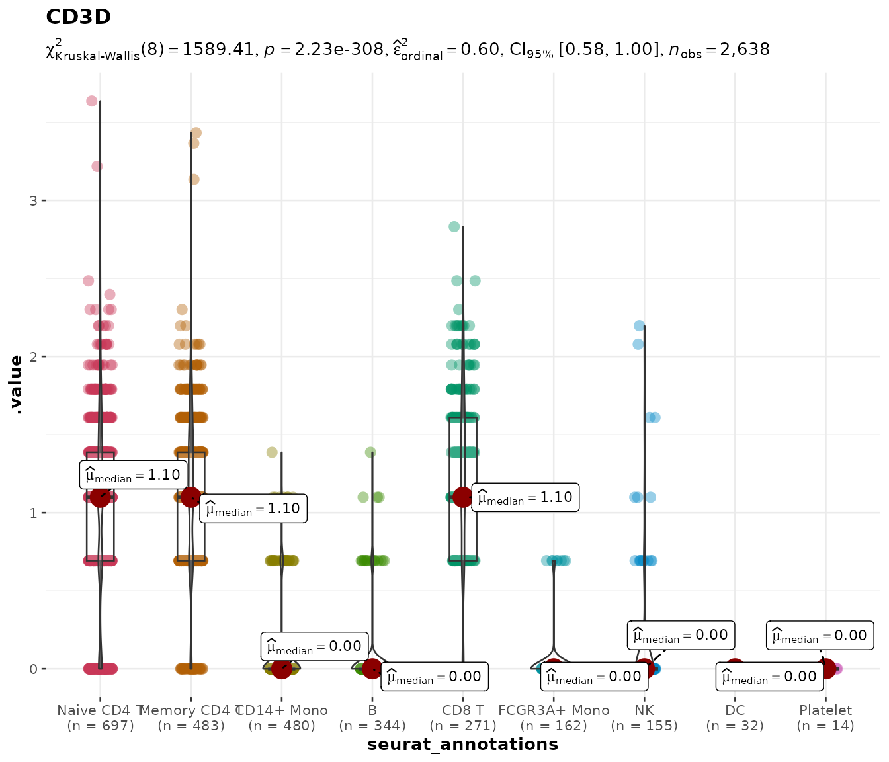
With nine annotation groups, pairwise brackets would overwhelm the
figure. The pairwise.display argument controls this:
Controlling pairwise comparisons
| Value | Behaviour |
|---|---|
"significant" |
Only significant pairs (default) |
"non-significant" |
Only non-significant pairs |
"all" |
Every pairwise comparison |
"none" |
Omnibus test only, no brackets |
Setting pairwise.display = "none" keeps the subtitle
showing the overall test statistic while removing all bracket
annotations — useful for publication figures where the brackets would
overlap.
Comparing specific groups with group.levels
Often you do not want to compare all cell types — perhaps only a few
are biologically relevant. The group.levels argument
filters the grouping variable to a specified subset before the
statistical test is run, so the test is performed only on the groups you
care about.
With fewer groups, pairwise brackets become readable again:
do_StatsViolinPlot(pbmc3k, features = "CD3D",
group.by = "seurat_annotations",
group.levels = c("Naive CD4 T", "Memory CD4 T", "CD8 T"))## Scale for colour is already present.
## Adding another scale for colour, which will replace the existing scale.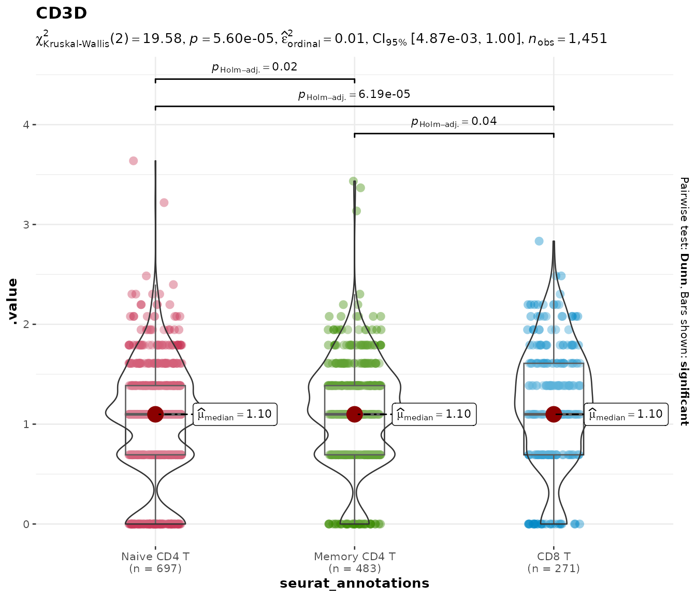
This is cleaner than subsetting the Seurat object manually and avoids the need to drop unused factor levels.
Parametric and Bayesian alternatives
The default nonparametric test is appropriate for most scRNA-seq
data, but you can switch to parametric (ANOVA / t-test),
robust, or Bayesian tests via the type argument:
do_StatsViolinPlot(pbmc3k, features = "CD3D",
group.by = "seurat_annotations",
group.levels = c("Naive CD4 T", "Memory CD4 T", "CD8 T"),
type = "parametric")## Scale for colour is already present.
## Adding another scale for colour, which will replace the existing scale.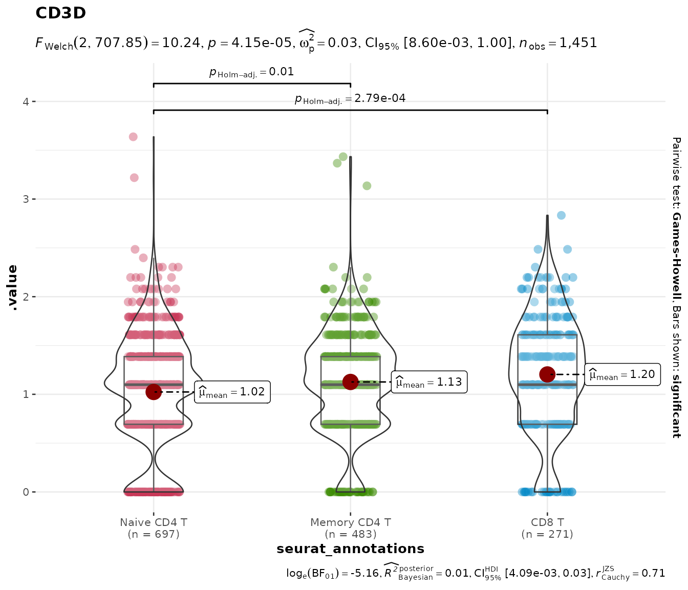
Multiple genes
Pass a vector of gene names to get a combined patchwork layout:
do_StatsViolinPlot(pbmc3k,
features = c("CD3D", "CD8A"),
group.by = "seurat_annotations",
pairwise.display = "none",
ncol = 2)## Warning: ✖ Number of labels is greater than default palette color count.
## ℹ Select another color `palette` (and/or `package`).## Scale for colour is already present.
## Adding another scale for colour, which will replace the existing scale.## Warning: ✖ Number of labels is greater than default palette color count.
## ℹ Select another color `palette` (and/or `package`).## Scale for colour is already present.
## Adding another scale for colour, which will replace the existing scale.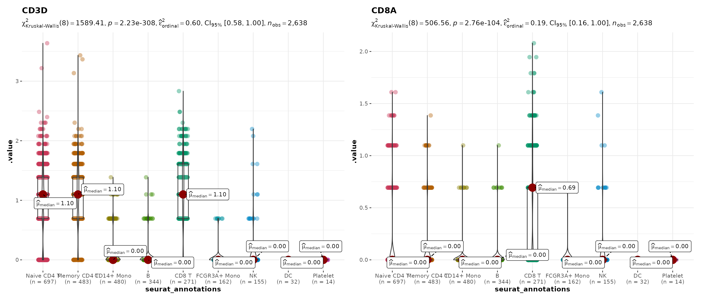
Plain violin plots
do_ViolinPlot() produces a violin + boxplot + jitter +
centrality marker (median diamond) without any statistical annotation.
Use this when you want a clean descriptive plot:
do_ViolinPlot(pbmc3k, features = "CD3D",
group.by = "seurat_annotations")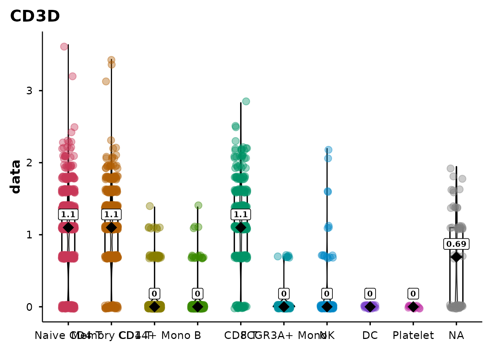
Sankey / alluvial diagrams
do_SankeyPlot() visualises relationships between
categorical metadata variables using an alluvial (Sankey) diagram. Each
stratum is labelled and coloured; flows connect cells across
variables.
Clusters to cell types
A common use case — mapping cluster IDs to biological annotations:
do_SankeyPlot(pbmc3k,
columns = c("seurat_clusters", "seurat_annotations"))## 62 cell(s) with NA values excluded from plot.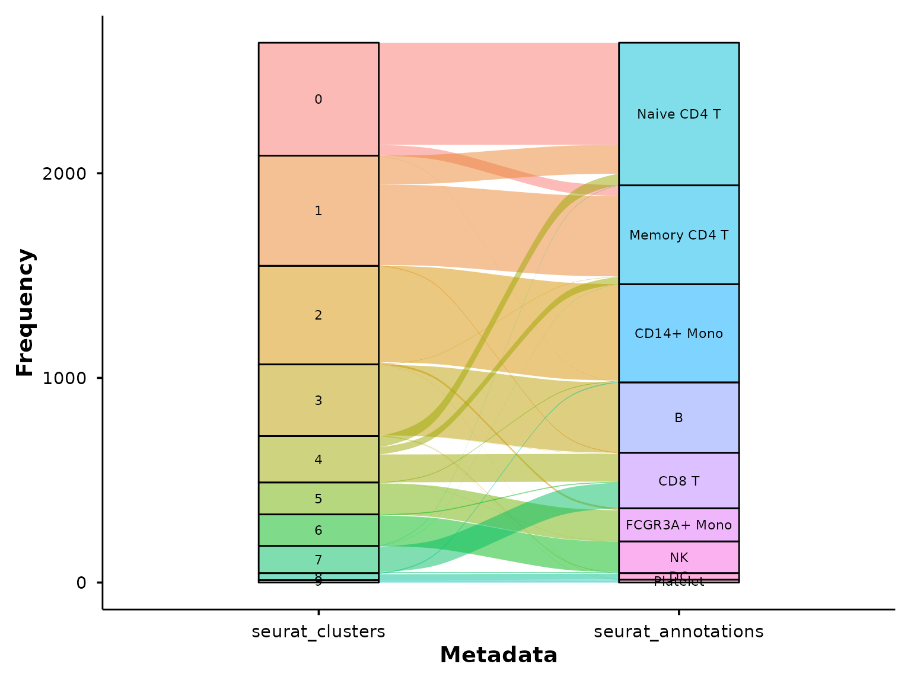
This immediately shows which clusters map cleanly to a single cell type and which are split across multiple annotations.